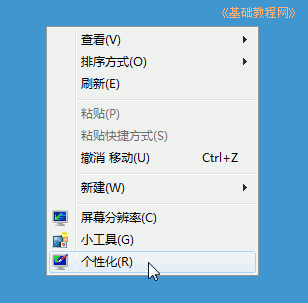
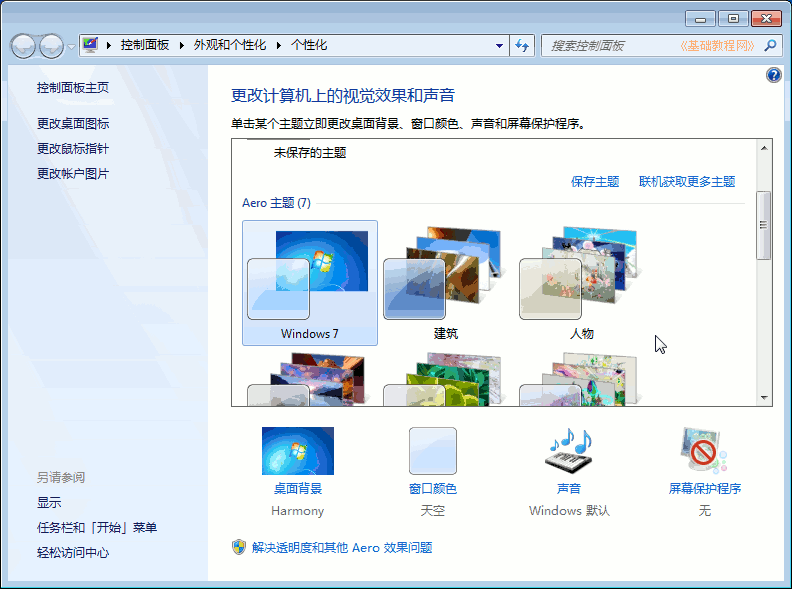
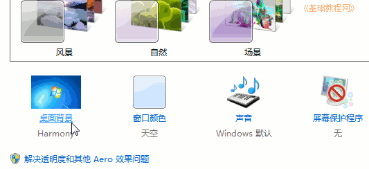
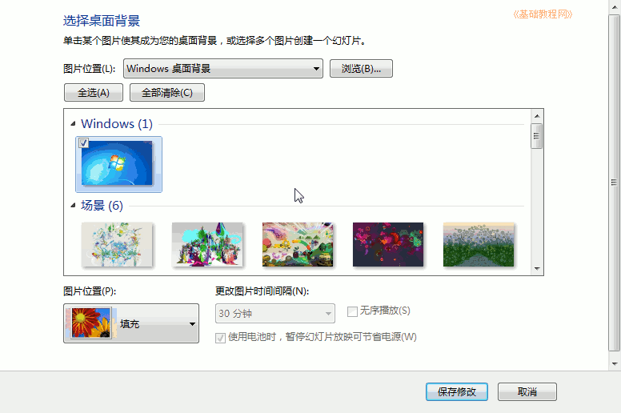
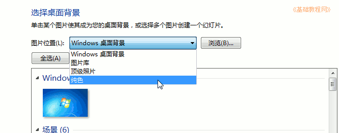
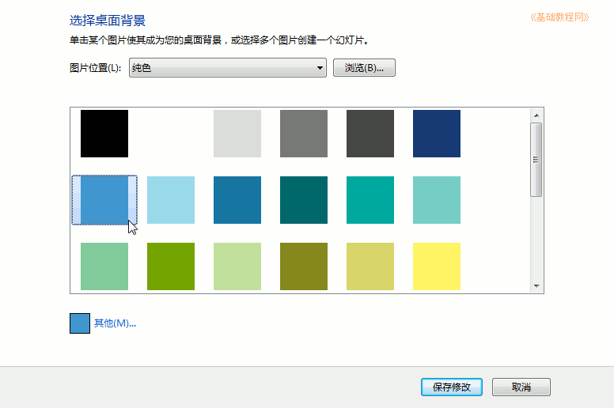
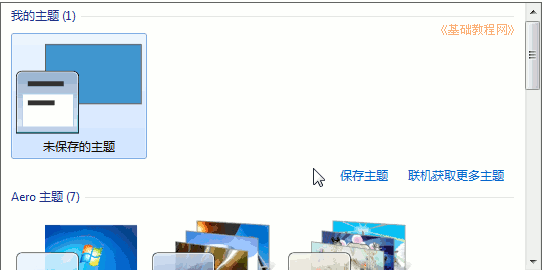

Windows7 基础入门教程
作者：TeliuTe 来源：基础教程网
九、桌面背景 返回目录 下一课一个干净整洁的桌面，有利于我们操作电脑，如何设置一个漂亮的背景，我们来看一个练习；
1、选择主题
1）在桌面空白处点右键，在出来的菜单里选“个性化”命令，出来一个对话框面板；

2）在出来的对话框中间，有许多主题，选择后自动切换到该主题样式；

3）在主题框下边有一排图标，点击第一个“桌面背景”；

4）出来一个背景对话框面板，在中间可以选择各种背景图片，然后点下边的“保存修改”按钮
如果选择了多个图片，还可以自动变换桌面选好以后；

5）点上边的“图片位置”下拉按钮，可以选择“纯色”，不要背景图片；

6）然后在中间的各种颜色背景中选一个即可；

7）点下边“保存修改”按钮，回到个性化面板中，上边出来一个“我的主题”，可以把它保存下来；

本节学习了设置桌面背景的基础知识，如果你成功地完成了练习，请继续学习下一课内容；
本教程由86团学校TeliuTe制作|著作权所有
基础教程网：>http://teliute.org/
美丽的校园……
转载和引用本站内容，请保留版权信息和本站链接。